2.3. Data Processing¶
The model module is ShakeMap’s primary data processing module. It gathers data, performs quality control, and interpolates ground motions to a grid or pre-selected set of points.
The interpolation is performed by treating the ground motions as a conditional multivariate normal distribution (MVN). The MVN approach employed by ShakeMap is described in Worden et al., 2018. The specifics of ShakeMap’s implementation of this method are described below.
2.3.1. Ground-Motion Prediction¶
2.3.1.1. Ground Motion Models¶
ShakeMap uses ground-motion prediction equations (GMPEs) to provide the initial estimates of ground motions. The GMPEs are drawn from the set of GMPEs implemented by the GEM OpenQuake project. The full list of available GMPEs may be found here.
In addition to these individual GMPEs, ShakeMap allows for a weighted
combination of two or more GMPEs. GMPEs are configured in ShakeMap
as GMPE “sets” (see gmpe_sets.conf and modules.conf for
information on the specification of GMPE sets; the GMPE set to use
is specified with the gmpe parameter of the model section of
model.conf) and are executed through its
MultiGMPE class.
The MultiGMPE class allows for smooth transitions between tectonic
environments, as well as consistency with the methodology of other
projects, such as the USGS National Seismic Hazard Model.
2.3.1.2. Ground Motion Model Sets¶
By default, ShakeMap comes with a few GMPE sets pre-configured, and we review a few of the important ones here. One example is the “active_crustal_nshmp2014,” which combines four NGA West2 GMPEs using equal weights. This is used by the USGS National Seismic Hazard Model (NSHM) for shallow crustal earthquakes, and was not changed in the 2018 update. We also include the 2014 NSHM set of GMPEs for stable continental regions (“stable_continental_nshmp2014_rlme”). However, this was updated in 2018 to use the NGA East GMPE. This can be specified using the “stable_continental_ngae” GMPE set. One limitation of the NGA East model is that it was not developed for use with magnitudes less than 4. Our implementation includes an extension of their model to smaller magnitudes that extrapolates the small-magnitude scaling of ground motions. The slope of this adustment varies with period and distance, as illustrated in .

Figure 1: Estimated small-magnitue scaling of the NGA-East median ground motion model as a function of period and distance.¶
2.3.1.3. Uncertainty from Multiple Models¶
The MultiGMPE module uses a list of GMPEs and their weights to
produce a weighted mean at each location. If we treat the outputs of the
GMPEs as random variables, then we can define a variable  as a
column vector of
as a
column vector of  random variables 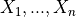. If the
weights are given by
random variables 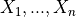. If the
weights are given by  , a column vector with elements
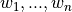, then the weighted mean,
, a column vector with elements
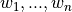, then the weighted mean,  is given by:
is given by:
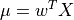
The variance of this mean can then be expressed as:
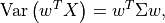
in which  is the covariance matrix of . This
covariance matrix is derived from the stated standard deviations of
the GMPEs (which may be heteroscedastic), and the computed correlations
among the elements of , as follows. The GMPE-defined standard
deviations supply a vector
is the covariance matrix of . This
covariance matrix is derived from the stated standard deviations of
the GMPEs (which may be heteroscedastic), and the computed correlations
among the elements of , as follows. The GMPE-defined standard
deviations supply a vector  with elements
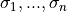 corresponding to the elements of
above. The correlation matrix,
with elements
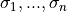 corresponding to the elements of
above. The correlation matrix,  , is computed from all of the
values provided by each GMPE for a given execution of the MultiGMPE (if
fewer than ten elements are computed for a given execution, then a
correlation matrix is approximated). The covariance matrix is then
given by:
, is computed from all of the
values provided by each GMPE for a given execution of the MultiGMPE (if
fewer than ten elements are computed for a given execution, then a
correlation matrix is approximated). The covariance matrix is then
given by:
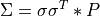
in which 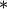 represents element-by-element multiplication. Since the standard deviations provided by the various GMPEs may be heteroscedastic, the variance must be computed for each point in the output. This variance calculation is applied to the within-event, between-event, and total variance of the MultiGMPE. Because variances are additive, the total is expected to be the sum of the within-event and between-event variances.
Figure 2 shows the mean ground motion field computed from a 50-50 weighting of the Abrahamson et al (2014) and the Chiou and Youngs (2014) GMPEs. The field smoothly decays with distance, as expected. The standard deviation field (Figure 3) shows a somewhat lower value near the source than at distance. Upon inspection of the cross-section plots and scale, however, we find that the variation is very small in amplitude. This variation is due to the heteroscedastic nature of the GMPEs.

Figure 2: The mean ground motion field for a 50-50 combination of the Abrahamson et al (2014) and the Chiou and Youngs (2014) GMPEs.¶

Figure 3: The standard deviation of the ground motion field for a 50-50 combination of the Abrahamson et al (2014) and the Chiou and Youngs (2014) GMPEs.¶
If the requested IMT is PGV, and some of the selected GMPEs do not produce PGV, then those GMPEs are removed from the list and the list is re-weighted with the remaining GMPEs in accordance with their original proportional weights. If none of the GMPEs in a set produce PGV, then MultiGMPE computs 1.0 s spectral acceleration and uses the Newmark and Hall (1982) equations to convert to PGV.
The MultiGMPE class will also accept a second set of GMPEs and weights to use beyond a specified distance.
2.3.1.4. Site Corrections¶
Near-surface conditions can have a substantial effect on ground motions. Ground motions at soft-soil sites, for instance, will typically be amplified relative to sites on bedrock. Because we wish to interpolate sparse data to a grid over which site characteristics may vary greatly, we compute our residuals and predicted ground motions using site amplification factors.
A third set of GMPEs may be supplied to the MultiGMPE class if all of the GMPEs in the primary set do not support Vs30-based site amplification. The GMPEs in this set will be used to compute the site terms, which will then be applied to the results of the primary set. Otherwise, the individual GMPEs will each apply site corrections to the ground motions they provide to the mean. As Vs30 has become a near-ubiquitous site amplification proxy parameter in current-genereation GMPEs, the latter approach usually applies.
2.3.1.5. Site Characterization Map¶
In general, site amplifications are computed using a Vs30 grid supplied
by the operator (see the Vs30 parameters vs30file and vs30default
in the data section of model.conf for configuration information.)
Each region wishing to implement ShakeMap should have a Vs30 map that covers the
entire area they wish to map.
Some ShakeMap operators have employed existing geotechnically- or geologically-based Vs30 maps, or have developed their own Vs30 map for the area covered by their ShakeMap system. For regions lacking such maps (including most of globe) operators often employ the approach of Wald and Allen (2007), revised by Allen and Wald, (2009b), which provides estimates of Vs30 as a function of more readily available topographic slope data. Wald and Allen’s slope-based Vs30-mapping proxy is employed by the Global ShakeMap (GSM) system.
Recent developments by Wald et al. (2011d) and Thompson et al. (2012; 2014) provide a basis for refining Vs30 maps when Vs30 data constraints are abundant. Their method employs not only geologic units and topographic slope, but also explicitly constrains map values near Vs30 observations using kriging-with-a-trend to introduce the level of spatial variations seen in the Vs30 data (Thompson et al., 2014). An example of Vs30 for California using this approach is provided in Figure 4. Thompson et al. describe how differences among Vs30 base maps translate into variations in site amplification in ShakeMap.

Figure 4: Revised California Vs30 Map (Thompson et al., 2014). This map combines geology, topographic slope, and constraints of map values near Vs30 observations using kriging-with-a-trend. Inset shows Los Angeles region, with Los Angeles Basin indicating low Vs30 velocities.¶
Worden et al. (2015) and Heath et al. (2020) further consolidate readily available Vs30 map grids used for ShakeMaps at global regional seismic networks with background derived from the topographic-based Vs30 proxy to develop a consistently scaled mosaic of Vs30 maps for the globe with smooth transitions from tile to tile.
2.3.1.6. Generic Amplification Factors¶
Shakemap does not currently support operator-supplied basin depths. Some modern GMPEs use basin depths (typically “Z1.0” or “Z2.5”) as an additional site amplification term. These GMPEs typically also provide empirical correlation functions to convert from Vs30 to the desired depth parameter. Note that for some GMPE combinations, these factors will be inconsistent with one another. Ultimately we hope to include a facility for the operator to provide basin depth grids. In the meantime, see the next paragraph on generic amplification factors.
After the calculation of the mean ground motions, the generic
amplification factors, if any, are applied. The generic amplification
factors are additive (in natural log space) factors that are intended
to accommodate basin or topographic amplifications. The user-supplied
grids should taper to zero at the edges, and are assumed to be zero
everywhere outside of the supplied grid(s). See the module
shakemap.utils.generic_amp for more on the generic amplification
factors.
2.3.2. Ground Motion to Intensity Conversions¶
While ideally we would have cross-correlation functions available between macroseismic intenstiy and other IMTs (see Cross-correlation Functions), no such functions are generally available at this time. In their absence, we make use of ground motion to intensity conversion equations (GMICEs). This situation results in a two-step process: the appropriate conversions are made to and from intensity and the other IMTs, and then these converted IMTs are downweighted in the MVN interpolation (as described by Worden et al., 2018.) The weighting is derived from the uncertainty (standard deviation) of the conversion (see Weighting of Residuals).
The application of a GMICE in this manner is somewhat limited, however, in that GMICE are typically only defined for PGA and PGV, with some extending to spectral acceleration at 0.3, 1.0, and 3.0 seconds. Again, the availability of cross-correlation functions for a wide variety of IMTs and spectral periods would be a preferable solution, and is a topic in need of further research.
For the current implementation of ShakeMap, we derive MMI from the best available IMT (PGV, PGA, SA(1.0), SA(0.3), and SA(3.0), in order of preference) for the MMI map. Similarly, we convert MMI to other IMTs, and use the best available of those for the IMT map in question (as discussed in IMT Selection).
The available GMICE are specified in the modules.conf configuration file,
and configured with the gmice parameter in the modeling section
of model.conf.
2.3.3. Intensity Prediction Equations¶
A small number of intensity prediction equations (IPEs) are currently
available. The available IPEs are for active tectonic and stable
tectonic regions. If a suitable IPE is not available, the operator may
specify the VirtualIPE as the
IPE of choice. The VirtualIPE uses the configured GMPE and GMICE to form
a composite IPE. That is, ground motions (typically PGV or PGV and PGA)
are predicted via the GMPE and then converted to intensity via the GMICE.
While the VirtualIPE allows the application of ShakeMap to a wider range of tectonic environments than the available IPEs, it comes at the cost of greater uncertainty in the predicted intensity values than the available IPEs. In particular, the standard deviation of a predicted intensity as given by the rules of error propagation (see Ku (1966) is:
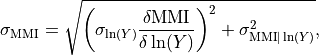
where 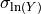 is the standard deviation of the natural log of the ground motion as given by the GMPE, 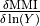 is the derivative of the GMICE at the value of 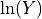 from the GMPE, and 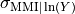 is the standard deviation of the ground motion to MMI conversion as given by the GMICE.
Because many GMICEs are bilinear (see, for example, Figure 5), the predicted intensities and their standard deviations can contain some features that are less than ideal. For instance, Figure 6 shows the mean intensity from a VirtualIPE of the Abrahamson et al (2014) and the Chiou and Youngs (2014) GMPEs combined with the GMICE of Worden et al. (2012). The MMI values display a distinct change in slope as the relation reaches the lower intensities. This change in slope is due to the different slopes of the two lines of the bilinear relationship. More significantly, Figure 7 displays a dramatic drop in the standard deviation at the point where the two lines of the bi-linear relationship meet. Neither of these features is likely physical, but are a consequence of the bilinear form of the GMICE.

Figure 5: MMI vs. PGV for the Worden et al. (2012) GMICE. Note the bi-linear relationship of the three GMICE plotted. (Figure from Worden et al. (2012).)¶

Figure 6: The mean MMI field for a VirtualIPE comprised of a 50-50 combination of the Abrahamson et al (2014) and the Chiou and Youngs (2014) GMPEs, and the Worden et al. (2012) GMICE.¶

Figure 7: The standard deviation of the MMI field for a VirtualIPE comprised of a 50-50 combination of the Abrahamson et al (2014) and the Chiou and Youngs (2014) GMPEs, and the Worden et al. (2012) GMICE.¶
2.3.4. Cross-correlation Functions¶
There is, as yet, a very limited number of cross-correlation functions in the literature. Currently, ShakeMap depends primarily on the cross-correlation functions defined by Loth and Baker (2013). These functions provide spatial cross-correlations among spectral accelerations (SA) at various periods. ShakeMap, however, works with several IMTs in addition to the SAs, and for which no cross-correlation models currently exist. Thus, we make several approximations for the purpose of applying the Loth and Baker relations to the non-SA IMTs:
PGA is treated as 0.01 second SA.
PGV is treated as 1.0 second SA.
MMI is treated as 1.0 second SA.
Again, these approximations are made for the purpose of computing the cross-correlations only. They do not affect other aspects of the treatment of these IMTs.
While not ideal, we feel that these approximations are reasonable. PGA is typically the product of the high-frequency part of a seismogram’s spectrum, and PGV tends to derive from a longer-period portion of the signal, and is often associated with 1.0 second SA. MMI, while its correlation structure is unknown, is closely correlated with PGV.
As suitable cross-correlation functions become available for additional IMTs, we will incorporate them into ShakeMap.
2.3.5. Data Handling and Outliers¶
As a general rule, ShakeMap assumes that by the time data reach model they have undergone fairly rigorous quality control. It is assumed that the seismic networks that produce the data maintain checks and quality assurance protocols, and that the ground-motion amplitudes ShakeMap receives can be assumed to be valid. That said, it is inevitable that the occasional errant amplitude will make it through. ShakeMap’s primary means of dealing with these amplitudes is through the flagging of outliers.
Outlier flagging works through an operator-configurable
parameter (max_deviation in the outlier sub-section of
the data section of model.conf). Essentially,
for each ground
motion in the input, a prediction is calculated with the
configured GMPE (or GMPE set). If the observed amplitude is greater than
max_deviation standard deviations above or below the
prediction, then that observation is flagged as an
outlier and is not used in further processing.
Outlier flagging is suspended in cases where the magnitude
of the earthquake exceeds the operator-configurable value
of max_mag (also in the outlier sub-section of the data
section of model.conf), and no finite rupture model
is available. The thinking here is that for larger earthquakes,
the large size of the rupture makes it difficult to know
the rupture distance, and the prediction becomes much less
reliable. While ShakeMap attempts to compensate for the
absence of a rupture model (see Finite-rupture Approximations),
it is still desirable to turn
off the outlier flagging at larger magnitudes. If a
rupture model is available, the max_mag parameter has no
effect.
Outlier flagging is performed on a per-IMT basis. Thus, for example, if a station’s PGA value is flagged, the other IMTs from that station are unaffected (unless they, too, are flagged). Derived parameters are, however, flagged if their source parameter is flagged (e.g., if PGV is flagged, then the MMI derived from it is also flagged).
2.3.6. Interpolation¶
Worden et al. (2018) discusses the application of the MVN to the interpolation of ground motions. Here, we discuss some specific details of its implementation within ShakeMap.
2.3.6.1. Computation¶
The conditional MVN can be summarized as a case in which we have a random variable of interest 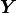 where we wish to compute predictions at a set of M ordinates (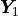) conditioned upon a set of N observations (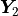). We can treat these as a vector with two components:
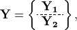
with mean:
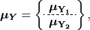
and covariance:
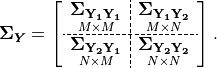
where 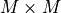, 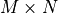, 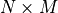, and
 give the dimensions of the partitioned matrices. The
mean values may be taken from a GMPE or other ground motion model. The
elements of the covariance matrix are given by:
give the dimensions of the partitioned matrices. The
mean values may be taken from a GMPE or other ground motion model. The
elements of the covariance matrix are given by:
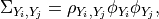
where 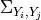 is the element of the covariance matrix at position (i, j), 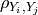 is the correlation between the elements 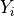 and 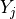 of the vector , and 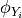 and 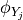 are the within-event standard deviations of the elements and . We note that the correlation between and may be a function of distance: either physical separation, spectral separation, or both.
Given a set of observations 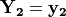, and their (usually predicted) means 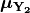, we define a vector of residuals
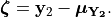
The distribution of 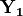, given that , is multivariate normal with mean
(1)¶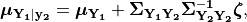
and covariance
(2)¶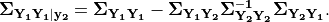
The constituents of 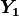 may be a particular IMT at multiple locations, multiple IMTs at a given location, or both: multiple IMTs at multiple locations. In a ShakeMap, we may have an output grid of Q locations and wish to compute this output grid for P different IMTs. Thus, 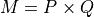. Similarly, the N constituents of 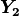 consist of a number of IMTs at each of a number of observation locations. Thus, as long as the elements of the covariance matrix 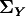 can be computed, Equations (1) and (2) could be computed just once to provide the complete grids for all of the output IMTs. In most cases, however, this approach is impractical and inefficient.
We note that in Equation (1) there is no interdependence on the computed elements of 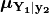. That is, the vector of output ordinates may be divided in any convenient way, the elements of 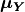 and adjusted accordingly, and the computations can proceed independently. The same cannot be said for Equation (2), where the full matrices must be used in order to compute the full covariance matrix 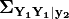.
For even a small Shake map of 200 by 300 grid points, the matrix 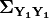 becomes 60,000 by 60,000 elements. In a typical ShakeMap run, at least 6 output IMTs are computed, making this matrix 36 times larger. This large size makes the computation of impractical for most situations. For ShakeMap uses, however, we are only interested in the diagonal elements of , that is, the variances of the conditional means. In this case, we can modify Equation (2) by making the following definitions:
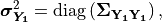
(that is, 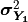 is a column vector formed from the diagonal elements of ) and
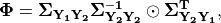
where 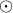 represents the element-by-element product.
Then the conditional variances may be found by:
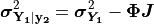
where 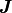 is a column vector of ones.
As with the conditional mean, this formulation is insensitive to any particular partitioning of the vector. For ShakeMap purposes, it is both convenient and computationally efficient to process each row of the output grid for each IMT separately.
2.3.6.2. IMT Selection¶
In a typical ShakeMap operational environment, it is common for each seismic station to produce a number of IMT observations, some of which may be flagged as outliers. In addition, in ShakeMap V4, the output IMTs may or may not correspond to any of the input IMTs. The MVN approach described in Worden et al. (2018) would allow all of the input IMTs to be used in the production of each output IMT. Such an approach, however, is inefficient.
If the output IMT is represented in the set of input IMT residuals, then any additional IMT residuals at that same site are mathematically irrelevant. Since the computational effort of the MVN process increases largely in proportion to the square of the number of residuals, adding unnecessary residuals only slows the process, without adding additional accuracy.
Similarly, we have found that in cases where the output IMT is not represented in the set of IMT residuals at a station, then using the two IMTs that “bracket” the output IMT is sufficient to define the observation point. For instance, if the output IMT is 2.0 second SA, and 0.3, 1.0, and 3.0 second SA are available in the input, then using the 1.0 and 3.0 second residuals is sufficient. (In situations where the output SA is higher (or lower) than the highest (or lowest) SA in the input, we choose the single IMT at the highest (or lowest) SA.)
Figure 8 illustrates this point. Conditional mean spectra were computed for two sets of points. One set had SA observations at three periods (0.3, 1.0, and 3.0 seconds), and the other set had observations at seven periods (0.02, 0.06, 0.3, 1.0, 3.0, 5.0, and 9.0 seconds). The observations the two sets had in common (0.3, 1.0, and 3.0 seconds) were constrained to be the same. The figure shows that in the shared regions (between 0.3 and 1.0 seconds, and between 1.0 and 3.0 seconds), there is very little difference between the conditional spectra. This point is reinforced by Figure 9, which shows the standard deviations of the two sets of conditional spectra. While the 7-point spectra is better constrained overall, in the area of overlap (again, between 0.3 and 1.0 seconds, and between 1.0 and 3.0 seconds) there is virtually no difference between the uncertainties. These figures were generated using the Chiou and Youngs (2014) GMPE and the Baker and Jayaram (2008) spectral correlation function. The odd kink in the mean plots at around 0.2 seconds is a result of the specifics of the correlation function.

Figure 8: Conditional spectra for two sets of conditioning observations: One set at three periods (0.3, 1.0, and 3.0 seconds), and the other set at seven periods (0.02, 0.06, 0.3, 1.0, 3.0, 5.0, and 9.0 seconds). The gray line is the spectrum of the GMM. The solid black line is the spectrum conditioned on 3 periods; the dashed line is the spectrum conditioned on 7 periods. The circles represent the periods and amplitudes of the conditioning observations.¶

Figure 9: The standard deviations of conditional spectra for two sets of conditioning observations: One set at three periods (0.3, 1.0, and 3.0 seconds), and the other set at seven periods (0.02, 0.06, 0.3, 1.0, 3.0, 5.0, and 9.0 seconds). The gray line is the standard deviation of spectrum from the GMM. The solid black line is the standard deviation of the spectrum conditioned on 3 periods; the dashed line is the standard deviation of the spectrum conditioned on 7 periods. The circles represent the periods and amplitudes of the conditioning observations.¶
2.3.6.3. Event Bias¶
Prior to computing the MVN as described in the section Computation above, ShakeMap computes the event term (the “bias”). Worden et al. (2018) discusses the calculation of the event term in more detail.
The bias at site m for IMT i is given by:
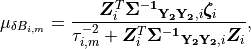
where 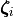 are the total residuals of IMT i (or its closest surrogates, as discussed in the section IMT Selection, above), is the covariance matrix of the within-event standard deviations of that particualr set of residuals, is the between-event standard deviation of IMT i at site m, and is the correlation between IMT i and the IMTs comprising the rows of multiplied by the “omega factors”, , of the residuals [for a discussion, see Worden et al. (2018)].
The variance of the bias terms is given by:
(3)¶
Unlike the bias calculated by earlier versions of ShakeMap, this approach in non-iterative and does not seek to directly minimize the misfit of the residuals. The approach described here apportions to the event term the fraction of the residuals that can be mathematically justified based on the size and number of residuals. Thus, we can compute a bias term (albeit a small one) even in situations where there is only one residual. Figure 10 illustrates this effect using a uniform set of residuals. The event term only approaches the mean of the residuals as the number of observations becomes large.

Figure 10: The event term as a function of the number of residuals. Here all of the residuals have a uniform value of 1.0. The within-event and between-event standard deviations are 0.7 and 0.3, respectively. The blue dots indicate the event term computed given a particular number of residuals, and the black bars indicate the uncertainty of the event term (i.e., +/- one standard deviation). As the number of observations increases, the event term approaches the mean of the residuals, and the standard deviation decreases.¶
In the ShakeMap implementation, the residuals used to compute the bias
are limited to a subset within a distance of max_range km from the
source (max_range is found in the bias sub-section of the
modeling section of model.conf). As with the outlier flagging, the
operator may
also set a max_mag for the bias (also found in the bias
sub-section of model.conf). If an earthquake exceeds max_mag,
and no rupture model is available, the bias computations will be
skipped.
The calculation and application of the bias may be turned off by
setting the parameter do_bias (found in the bias sub-section
of the modeling section of model.conf) to False.
2.3.6.4. Updating the Within-Event Standard Deviation¶
Once the bias calculation has been performed, the residuals may be computed from the biased estimates of the ground motions. Similarly, the adjusted within-event standard deviation of the residuals may be calculated:
where
is the adjusted within-event standard deviation
of IMT i at site m,
 is the within-event standard deviation of IMT i
at site m, and
is the standard deviation of the bias
as calculated by Equation (3).
is the within-event standard deviation of IMT i
at site m, and
is the standard deviation of the bias
as calculated by Equation (3).
With the adjusted within-event residuals, the elements of the covariance matrix are given by:
where the variables are defined as they were in the section
Computation, but with
 replacing
replacing  .
.
2.3.6.5. Weighting of Residuals¶
As discussed in Worden et al. (2018) uncertain data can be accommodated in the MVN structure through the use of the “omega factors”. In our implementation, these factors are based on the adjusted within-event standard deviation computed for each residual:
where
is the additional standard deviation of the
observation of IMT i at site m. These factors are then applied to the
covariance matrix and the residuals, as discussed in Worden et al.
Analogous factors, using the unadjusted within-event standard deviation
() rather than the adjusted standard deviation
() are used to modify the
vectors and residuals when computing the bias.
The additional standard deviation of a residual (i.e., ) can come from a number of sources. Observations converted from one IMT to another (via, for example, the GMICE) will carry the additional uncertainty of the conversion process. Intensity observations themselves – such as those obtained through the “Did You Feel It?” system – have an inherent uncertainty due to the averaging process in their derivation. This standard deviation may be specified by the operator in the input file. If it is not specified, ShakeMap assigns a default standard deviation to intensity measurements of 0.3 intensity units. Other observations may have non-zero uncertainty for reasons of instrument or site characteristics. This uncertainty may be specified in the input file using the ln_stddev attribute of the amplitude tag.
2.3.6.6. Summary¶
The interpolation process begins with the calculation of the bias, where the covariance matrix, , and the “omega factorrs”, , are assembled from the unadjusted within-event standard deviations, and the residuals, , are the total residuals computed from the unbiased estimates.
Once the bias values and the adjusted within-event standard deviations are known, the covariance matrix and the “omega factors” can be re-computed (using the adjusted within-event standard deviations), and the residuals are recomputed from the bias-adjusted estimates. These updated factors (including the bias-adjusted estimates) are then used in the MVN procedure as described in section Computation.
2.3.7. Finite-rupture Approximations¶
In situations where no finite rupture model has been specified, ShakeMap will approximate distances (and adjust the uncertainties of predicted ground motions) using the point-source to finite-rupture equations developed by Thompson and Worden (2018)
2.3.8. Output: Points vs. Grids¶
The typical application of ShakeMap is to compute ground motions
over a gridded region. The grid is centered on the epicenter of
the earthquake, and its extent is set automatically. The default
configuration tends to err on the side of larger maps, however
the operator may control the parameters used to determine the
map extent through the extent section of the model.conf
configuration file. Alternately,
the operator may set fixed bounds for maps through the extent
parameter in the bounds sub-section of the
extent section in model.conf (which, like all parameters in
model.conf may be set globally or on an event-by-event basis).
ShakeMap can also be configured to compute ground motions for
an arbitrary set of points. The operator may create a file
containing rows of longitude, latitude, Vs30, and a location or facility
identifier (with the columns being separated by whitespace).
The file may then be specified with the file parameter in
the prediction_location sub-section of the interp section
of model.conf.
2.3.9. Performance Considerations¶
2.3.9.1. Multithreading¶
The run time of ShakeMap is most strongly controlled by the number
of input seismic stations (and macroseismic observations), the size
of the output grid, and the number of output IMTs. While the Numpy
code that does the majority of the computations is highly optimized
on most systems (including running on multiple cores), it may be
possible to improve the performance of ShakeMap on some systems
by setting the
max_workers parameter in the system section of model.conf.
Setting max_workers to a value greater than one will tell
ShakeMap to spin off separate threads for the output IMTs (thus,
there is no point in setting this value to anything larger than
the number of output IMTs.) There is, however, an interaction with
the BLAS libraries underlying Numpy. If ShakeMap produces an
error of the type:
BLAS : Program is Terminated. Because you tried to allocate
too many memory regions.
then max_workers should be reduced (or, you can obtain or
compile BLAS libraries that are reentrant-safe – a topic which is
far beyond the scope of this manual.)
2.3.9.2. Grid Size¶
At a given grid resolution (as specified in model.conf), the number
of points in the grid can grow very large for maps that cover several
degrees of latitude and longitude. ShakeMap’s automatic scaling
feature can often produce such large maps for larger-magnitude
earthquakes. The resulting increase in ShakeMap run times can be
quite dramatic. To alleviate this situation in cases where ShakeMap
is run automatically (and thus the map extent is determined automatically)
we have introduced the parameter nmax in the interp section of
model.conf. This parameter can be set to limit the number of points
in the grid
by increasing the X and Y grid spacing until the limit is not exceeded.
The default value of 500,000 seems to provide a good balance between
resolution and run time, but the operator may adjust the value to suit
their needs.